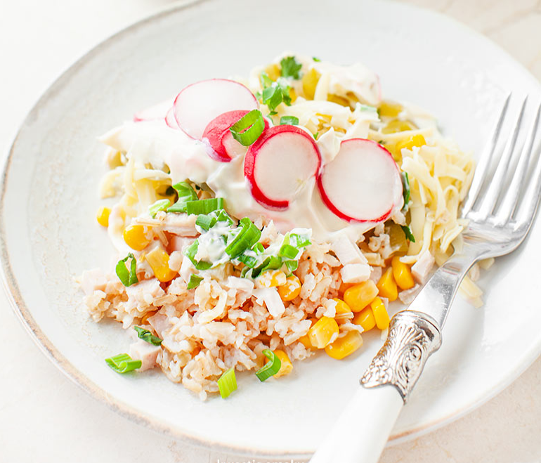

Sałatka Ryżowa
Składniki:
- 100 g ryżu (np. pełnoziarnistego)
- przyprawy: sól, pieprz, oregano, czerwona papryka
- 3 plastry ananasa z puszki lub/i słoiczek marynowanego selera (z ananasem)
- 150 g szynki (np. wędzonego indyka)
- 1 mała puszka kukurydzy
- 150 g sera żółtego
- pęczek natki pietruszki
- 4 ogórki kiszone
- ok. 150 g majonezu
- pęczek rzodkiewki
- pęczek szczypiorku
Przygotowanie:
- Ryż ugotować w osolonej wodzie zgodnie z instrukcją na opakowaniu, odcedzić, wyłożyć na duży talerz lub tacę i ostudzić. Doprawić solą, pieprzem, oregano oraz papryką i wyłożyć na dno salaterki.
- Dodać kolejne warstwy sałatki: posiekanego ananasa, seler marynowany, pokrojoną w kosteczkę szynkę, następnie odcedzoną kukurydzę, starty żółty ser, posiekaną natkę pietruszki, obrane i pokrojone w kosteczkę kiszone ogórki.
- Przykryć majonezem, obłożyć plasterkami rzodkiewek i posypać grubą warstwą posiekanego szczypiorku.
Wskazówki:
- Majonez można wymieszać z łyżeczką musztardy.
